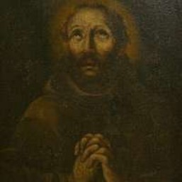
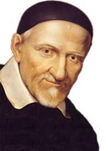

PASTORAL DA SOLIDARIEDADE:
Todos somos parte do milagre de Deus
POR QUE UMA PASTORAL DA SOLIDARIEDADE?
Dom Walmor Oliveira de Azevedo, Arcebispo Metropolitano de Belo Horizonte, nos convida a refletir sobre a Solidariedade em um artigo muito sugestivo, em quatro pontos, ele nos responde a pergunta enunciada acima.
1. O VALOR DA SOLIDARIEDADE
Viver a solidariedade é indispensável para possibilitar que as práticas políticas recuperem a sua inteireza. É necessária uma limpeza nos mais variados mecanismos de funcionamento da política, e de forma urgente.
A solidariedade, por ser um valor capaz de requalificar, permite reconstruir o esgarçado tecido da cidadania. Por isso, em todos os momentos, em diferentes sociedades, é indispensável fazer referência, propor iniciativas e refletir sobre a solidariedade. No coração da prática solidária está o princípio fundamental e inegociável da consideração para com o outro.
O apóstolo Paulo faz essa recomendação, estabelecendo esse valor como fundamento da identidade daquele que tem fé. Explica o apóstolo: exemplar é o gesto de Deus ao oferecer à humanidade o que tem de mais precioso, seu filho Jesus, o Salvador. Assim, Deus antecipa-se no gesto de reconciliação com o ser humano, deixando a lição fundamental de que é preciso reconhecer a importância do outro. Esse "outro" é você, eu, cada um de nós. Esse princípio tem força de equilíbrio, pois conduz a civilização na direção humanística que permite superar crises.
2. SEMEAR A SOLIDARIEDADE
Embora, muitas vezes, reconheça-se o valor da solidariedade, sabe-se que não é tão simples plantar e fazer florescer essa convicção nos corações. Na política, por exemplo, em vez de se investir nos gestos solidários, prevalece a crença de que avanços diversos dependem de conchavos, ideologias partidárias ou simplesmente das promessas nunca cumpridas. Contenta-se assim com ensaios de lucidez, insuficientes para atender aos urgentes anseios do povo, principalmente de quem é mais pobre. Falta, pois, na sociedade brasileira, um tecido solidário de qualidade.
Quase sempre, o que se verifica no Brasil é um discurso de autoelogio sobre certas práticas dedicadas aos outros. Em "alto e bom som", há os que proclamam que a cultura latina e a brasilidade têm na solidariedade um valor inerente. Fazem referências desdenhosas a outras culturas marcadas pela objetividade, interpretando essa característica como "frieza". Mas, na prática, isso serve apenas para aliviar as consciências de pessoas que não se doam ou se contentam em fazer tímidas doações a projetos sociais.
3. AMAR O OUTRO COMO A SI MESMO
Ora, isso é bem diferente do que ensina o principio apresentado pelo apóstolo Paulo - considerar a importância do outro. O apóstolo adverte que a liberdade, quando se torna pretexto para buscar o que satisfaz, mas não convém, provoca desastres. Incapacita a competência humana e espiritual de amar ao outro como a si mesmo. O resultado é nefasto, diz o apóstolo: "Se vos mordeis e vos devorais uns aos outros, cuidado para não serdes consumidos uns pelos outros!" (GI 5,15). Paulo indica o caminho a seguir: "Fazei-vos servos uns dos outros, pelo amor" (Gl 5,13b).
Ao trilhar esse percurso e reconhecer o valor da solidariedade, colabora-se com a construção de uma cultura que contemple fortes sentidos de pertencimento, patriotismo e apurada sensibilidade humana, que se desdobra em gestos e ofertas mais generosas. Quem se faz servo apura a própria visão da realidade e consegue ouvir os clamores de quem necessita de ajuda.
4. VIVENCIAR A SOLIDARIEDADE
Por isso mesmo, urgente e prioritário, neste momento em que a sociedade brasileira precisa sair da crise, é reconhecer que a solidariedade é determinante nas dinâmicas sociais. Isso não é uma simples reflexão teórica, mas indicação de uma exigência moral com força transformadora, pois possibilita o surgimento de atitudes que estão na contramão das violências que dizimam, das corrupções que sucateiam e da perda da percepção de que todos são destinatários, igualmente, de condições dignas.
O QUE NOS MOTIVA.
No Evangelho escrito por Mateus, no capítulo 25, 31-44, Jesus deixa bem claro qual deve ser o nosso relacionamento com o próximo, especialmente os mais fragilizados. Vale a pena ler e refletir. Mt 25, 31-44- 31"Quando o Filho do Homem voltar na sua glória e todos os anjos com ele, se sentará no seu trono glorioso. 32Todas as nações se reunirão diante dele e ele separará uns dos outros, como o pastor separa as ovelhas dos cabritos. 33Colocará as ovelhas à sua direita e os cabritos à sua esquerda. 34Então, o Rei dirá aos que estão à direita: 'Vinde, benditos de meu Pai, tomai posse do Reino que vos está preparado desde a criação do mundo, 35porque tive fome e me destes de comer; tive sede e me destes de beber; era peregrino e me acolhestes; 36nu e me vestistes; enfermo e me visitastes; estava na prisão e viestes a mim'. 37Os justos lhe perguntarão: 'Senhor, quando foi que te vimos com fome e te demos de comer, com sede e te demos de beber? 38Quando foi que te vimos peregrino e te acolhemos, nu e te vestimos? 39Quando foi que te vimos enfermo ou na prisão e te fomos visitar?', 40Responderá o Rei: 'Em verdade eu vos declaro: todas as vezes que fizestes isso a um destes meus irmãos mais pequeninos, foi a mim mesmo que o fizestes.' 41Ele se voltará em seguida para os da sua esquerda e lhes dirá: 'Retirai-vos de mim, malditos! Ide para o fogo eterno destinado ao demônio e aos seus anjos. 42Porque tive fome e não me destes de comer; tive sede e não me destes de beber; 43era peregrino e não me acolhestes; nu e não me vestistes; enferma e na prisão e não me visitastes'. 44Também estes lhe perguntarão: "Senhor, quando foi que te vimos com fome, com sede, peregrino, nu, enfermo, ou na prisão e não te socorremos?’. 45E ele responderá: 'Em verdade eu vos declaro: todas as vezes que deixastes de fazer isso a um destes pequeninos, foi a mim que o deixastes de fazer’. 46E estes irão para o castigo eterno, e os justos, para a vida eterna."
SOLIDARIEDADE
A palavra solidariedade advém etimologicamente, de sólido e consistente, solidus do latim. Do adjetivo derivam o substantivo solum - fundamento e apoio, e também os verbos solidare consolidar, segurar, fazer sólido - e solidescere - fazer-se sólido, consolidar.
A SOLIDARIEDADE DO AMOR NA AÇÃO CONCRETA.
"A solidariedade é precisamente partilhar o pouco que temos com quantos nada têm, para que ninguém sofra". "Como membros da sociedade civil, mantenhamos vivo o apelo aos valores da liberdade, responsabilidade, fraternidade e solidariedade; e, como cristãos, encontremos sempre na caridade, na fé e na esperança o fundamento do nosso ser e da nossa atividade".
A sinceridade do Amor está nas ações concretas através da atenção e solicitude pelos pobres, conforme nos diz São Paulo: "7Vós vos distinguis em tudo: na fé, na eloquência, no conhecimento, no zelo de todo gênero e no afeto para conosco. Cuidai de ser notáveis também nessa obra de caridade. 8Não o digo como quem manda, mas, para exemplo do zelo dos outros, quisera pôr em prova a sinceridade de vossa caridade. "9Vós conheceis a bondade de nosso Senhor Jesus Cristo. Sendo rico, se fez pobre por vós, a fim de vos enriquecer por sua pobreza" (2Cor 8,8). Não basta ouvir a Palavra de Deus, é preciso praticá-la, é o que lemos em São Tiago: 22Sede cumpridores da palavra e não apenas ouvintes; isto equivaleria a vos enganardes a vós mesmos. 23Aquele que escuta a palavra sem a realizar assemelha-se a alguém que contempla num espelho a fisionomia que a natureza lhe deu: 24contempla-se e, mal sai dali, esquece-se de como era. 25Mas aquele que procura meditar com atenção a Lei perfeita da liberdade e nela persevera - não como ouvinte que facilmente se esquece, mas como cumpridor fiel do preceito, este será feliz no seu proceder" (Tg 1,22-25). Mas o mal da indiferença pode nos levar à idolatria do dinheiro, acumulando tesouros na terra, nos alerta o Senhor Jesus em Mateus: "19Não ajunteis para vós tesouros na terra, onde a ferrugem e as traças corroem, onde os ladrões furtam e roubam. 20Ajuntai para vόs tesouros no céu, onde não os consomem nem as traças nem a ferrugem, e os ladrões não furtam nem roubam." 21Porque onde está o teu tesouro, lá também está teu coração" (cf. Mt 6,19-21).
SOLIDARIEDADE É BEM MAIS QUE SIMPLES GENEROSIDADE
A palavra "solidariedade", "significa muito mais do que alguns atos esporádicos de generosidade, é muito mais, supõe a criação de uma nova mentalidade que pense em termos de comunidade, de prioridade da vida de todos sobre a apropriação dos bens por parte de alguns. Isso significa solidariedade. Não é só questão de ajudar os outros, isso é muito bom fazer, mas é mais. Trata-se de justiça". E para ser solidária, dar frutos, a interdependência "tem necessidade de fortes raízes no humano e na natureza criada por Deus, tem necessidade de respeito pelos rostos e pela terra". (Papa Francisco)
A mensagem do Papa Francisco para o III Dia Mundial dos Pobres, celebrado em 17 de novembro de 2022. O Santo Padre recordou que a promoção dos pobres, mesmo social, não é um compromisso extrínseco ao anúncio do Evangelho.
O Papa fala também das periferias de nossas cidades, repletas de pessoas que vagueiam pelas ruas, em busca de alimento. "Tendo-se tornado eles próprios partem duma lixeira humana, são tratados como lixo, sem que isto provoque qualquer sentido de culpa em quantos são cúmplices deste escândalo. Os pobres não são lixo humano, precisam do nosso amor"
"Uma solidariedade guiada pela fé nos permite traduzir o amor de Deus em nossa cultura globalizada, não construindo torres ou muros que dividem e depois desabam, mas tecendo comunidades e apoiando processos de crescimento verdadeiramente humanos e sólidos." Ou seguimos em frente pelo caminho da solidariedade ou as coisas irão piorar. Quero repetir: de uma crise não se sai como antes. De uma crise, sai-se melhor ou pior. Temos que escolher. E a solidariedade é precisamente o caminho para sair melhores da crise".
O QUE É PASTORAL DA SOLIDARIEDADE?
A Pastoral da Solidariedade é uma organização que tem como objetivo ajudar famílias carentes e cadastradas, repassando donativos e auxiliando em sua formação humana.
A Pastoral da Solidariedade deve transmitir a luz da fé que conforta e dá esperança que anima.
Para que a Providência Divina aconteça na vida dos necessitados Deus conta com a nossa ajuda. Se Deus não quisesse dessa maneira, Jesus não teria pedido que lhe trouxessem os cinco pães e os dois peixes para serem multiplicados e assim alimentar o povo faminto (cf. Mt 14,13-21). Como Filho de Deus, Ele poderia ter realizado aquele milagre por si só. Mas não foi o que Ele fez.
Isso nos ensina que nós somos colaboradores da graça Divina. Por isso, cada um de nós precisamos fazer a nossa parte. Em outra ocasião, Jesus recomendou "Dai-lhes vós mesmo de comer" (Mc 6,34- 44).
Além disso, quando fazemos o bem a alguém é ao próprio Cristo que fazemos, conforme Ele mesmo disse: "Em verdade eu vos declaro: todas as vezes que fizestes isso a um destes meus irmãos mais pequeninos, foi a mim mesmo que o fizestes" (Mt 25,40).
Neste sentido, é inadmissível que o cristão ignore a condição precária de vida de seus irmãos em Cristo.
OBJETIVO DA PASTORAL DA SOLIDARIEDADE
Manter um serviço organizado de promoção humana/cristã, como testemunho da fé cristã comprometida, para pessoas e familias em situação de emergência ou empobrecidas na nossa Paróquia, procurando ser voz e luz dos que não tem, nem vez, nem voz.
DIRETRIZES:
QUAL É O CAMINHO QUE SEGUIREMOS?
- A Solidariedade, na Igreja, tem o significado de uma fé cristã, que para ser autêntica, deve ser comprometida com os necessitados.
- A Pastoral da solidariedade tem o compromisso de ser a voz dos necessitados que muitas vezes não tem nem vez e nem voz.
- A integração social digna é um direito e não resultado da bondade de quem lidera.
- Somente um serviço organizado leva o atendimento além da emergência da fome e produz a promoção da dignidade humana.
- Um trabalho conjunto, que une todas as forças, consegue realizar uma ação social e solidária que seja participativa e libertadora.
- Por questão de organização e de meta é bom seguir o critério de ajuda aos que residem no território da Paróquia.
- Como toda a integração somente acontece na mútua participação nosso princípio de exigir ações concretas em troca da ajuda (exames de saúde, escola, participação na comunidade...) faz parte de nossa ação solidária.
- Uma ação social verdadeira e eficaz supõe uma rede de ações entre os diversos atendimentos.
- Promover encontros, com certa frequência, com as famílias que são assistidas para uma orientação humano - religiosa
QUAL É A NOSSA MISSÃO?
'Ser mensageiros da palavra de fé e da esperança cristã em meio à comoção diante do mistério da morte': Essa quer ser a missão dos membros da Pastoral da Solidariedade, de nossa paróquia.
A experiência e o campo de ação da Pastoral da Solidariedade são bastante amplos, como: visita a enfermos, acompanhamento de velórios, celebração de exéquias (quando necessário), visita a casa dos familiares do falecido. "Levamos aos enlutados o conforto que vem da certeza de que todos um dia partiremos e ressuscitaremos, como ocorreu com Cristo, o nosso Redentor".
Na nossa Paróquia, no nos limitaremos a prestação de serviços juntos aos mais necessitados na distribuição de alimentos.
Os recursos para atender as famílias necessitadas, não faltam; nosso povo é generoso e sempre faz doações de alimentos, roupas, etc. "Dê cada um conforme o impulso do seu coração, sem tristeza nem constrangimento. Deus ama o que dá com alegria". (2 Corintios 9,7). Um dos problemas que podemos enfrentar são algumas pessoas má intencionadas, querendo se aproveitar. E, para evitar os "vivaldinos", a equipe precisa de certa organização para saber aquém de fato precisa de ajuda.
SOLIDARIEDADE:
O QUE NOS DIZ PAPA FRANCISCO?
A solidariedade é uma resposta para o outro e também para Deus. Ser solidário significa exercer o amor do Pai com nossos irmãos, retribuir toda sua bondade conosco e seguir as lições que Jesus nos deixou. Quem nos inspira muito nesse sentido é o Papa Francisco que, recentemente, descreveu a solidariedade como o único caminho para sairmos da crise melhor do que entramos.
"De uma crise, sai-se melhor ou pior. Temos que escolher. E a solidariedade é precisamente o caminho para sair melhores da crise" (Papa Francisco, catequese na Audiência Pública do dia 02 de setembro de 2020).
O QUE É SER SOLIDÁRIO?
Primeiramente, para algumas pessoas, a solidariedade pode ser compreendida como atos de caridade. Nesse aspecto, o Papa Francisco nos mostra que a resposta é diferente. Ser solidário vai muito além da generosidade. É agir verdadeiramente em prol de justiça social. Nesse sentido, só conseguimos agir com solidariedade quando olhamos para nossos irmãos como seres únicos e verdadeiras bênçãos de Deus.
A essência de ser solidário, portanto, está em olhar para o outro com amor, respeitando a individualidade de cada pessoa e agindo em prol da igualdade. Não é só questão de ajudar os outros, isso é muito bom fazer, mas é mais. Trata-se de justiça"
EVANGELII GAUDIUM, nº 188
A raiz da solidariedade está no outro. Segundo o Papa Francisco, somos interdependentes. Ou seja, isso quer dizer que estamos ligados uns aos outros. Essa conexão pode nos proporcionar caminhos frutíferos ou não. Dessa forma, cabe a nós escrever essa história. Quando optamos pelo caminho da solidariedade, tudo floresce e o resultado é positivo para todos nós. Como família global conectada, se uma pessoa é atingida por um ato solidário, todos os outros também são retribuídos e abençoados.
"Estamos todos ligados uns aos outros, tanto no mal como no bem. Por conseguinte, para sairmos melhores desta crise, devemos fazê-lo juntos, juntos, não sozinhos. Sozinhos porque não se consegue. Ou se faz juntos ou não se faz. Devemos fazê-lo juntos, todos nós, em solidariedade. Gostaria de sublinhar esta palavra, solidariedade". E o Papa Francisco completa: "Como família humana explicou temos uma origem comum em Deus; vivemos em uma casa comum, o planeta-jardim no qual Deus nos colocou; e temos um destino comum em Cristo. Mas quando esquecemos tudo isso chamou a atenção - nossa interdependência torna-se a dependência de uns em relação aos outros" (Catequese na Audiência Pública do dia 02 de setembro de 2020).
Sob o mesmo ponto de vista, sugerimos a leitura sobre uma filosofia de vida inspiradora chamada Ubuntu. Ela defende que somos todos iguais e que a nossa atitude gera no outro um efeito. Podemos fazer uma analogia em que todos nós, seres humanos, formamos uma parte inseparável do tecido que dá vida à humanidade.
ESTAMOS PRATICANDO A VERDADEIRA SOLIDARIEDADE?
Dando continuidade às frases do Papa Francisco sobre solidariedade, uma reflexão deixada pelo Santo Padre é se estamos, de fato, pensando nas necessidades do outro.
"Em meio a crises, uma solidariedade guiada pela fé nos permite traduzir o amor de Deus em nossa cultura globalizada, não construindo torres ou muros e quantos muros estão sendo construídos hoje que dividem, mas depois desabam, mas tecendo comunidades e apoiando processos de crescimento verdadeiramente humanos e sólidos. E para isso ajuda a solidariedade." (Catequese na Audiência Pública do dia 02 de setembro de 2020.)
Nesse sentido, para evoluirmos espiritualmente nesse sentido, podemos nos fazer perguntas como:
- Eu estou construindo pontes ou muros?
- Como está sendo a minha comunicação com o próximo?
- Como vai a minha capacidade de escuta, diálogo, comunicação assertiva, inclusiva e não violenta?
- Defendo a justiça social e um olhar de compaixão com todos?
- Eu respeito as escolhas do outro, bem como divergência de ideias?
- Minha vida está pautada na promoção e defesa dos direitos humanos?
Por fim, quando entendemos que somos uma comunidade global, interdependente e com impacto direto no outro, nos tornamos guardiões da felicidade uns dos outros. É como acontece com alguém próximo. Nosso amor nos faz cuidar, proteger e garantir o bem-estar da pessoa que amamos. Assim, ao olharmos para o próximo como irmãos do mesmo Pai, viramos a chave rumo a um mundo melhor, com relacionamentos mais humanos e sólidos.
"Eu faço uma pergunta: eu penso nas necessidades dos outros? Cada um responda em seu coração." (Papa Francisco).
O Papa Francisco por ocasião da comemoração de seu 10º ano de pontificado em uma entrevista a um jornalista belga, assim se expressou a respeito da solidariedade e ação social da Igreja.
"Com a evolução, nas nossas regiões, de uma Igreja majoritária para uma Igreja de escolha - com um clero em diminuição e menos fiéis, a liderança da Igreja tende a se concentrar naquilo que considera ser o seu "core business": a liturgia e o anúncio. Mas, ao agir assim, a dimensão do serviço e das obras de caridade correm o risco de passar para segundo plano. Não é precisamente aí que surgem as oportunidades de tocar o coração dos nossos contemporâneos? A Igreja não deveria mostrar mais o seu rosto social e profético se quiser ser relevante hoje?
Mas cuidado: o compromisso social da Igreja é uma reação, uma consequência do culto. Portanto, este compromisso não deve ser confundido com a ação filantrópica que também um incrédulo pode realizar. A ação social da Igreja brota de seu ser porque ela reconhece Jesus nela. Ela é tão forte que é até a medida pela qual, e segundo Jesus, seremos julgados.
Segundo Mateus no capítulo 25, ouviremos esta medida de nossa caridade no Juízo Final: "Eu estava com fome e vocês me deram de comer; eu estava com sede, e me deram de beber; eu estava na prisão, e vocês foram me visitar; eu estava doente, e cuidaram de mim...". Todas essas são ações sociais, mas não são realizadas por obrigação social ou por dever, mas porque Jesus está presente nelas. No entanto, jamais reconhecerei Jesus ali se não o reconhecer também na adoração e no culto. Os dois andam de mãos dadas. Eles devem estar unidos. Uma Igreja puramente cultual não é uma Igreja, assim como não o é uma Igreja puramente "social" - por assim dizer. Um é consequência do outro, e um leva ao outro. É importante manter esse vínculo e essa interação.
Na Eucaristia há também estímulos para não esquecer o diaconato(serviço) e a caridade: a coleta pelos pobres, as intercessões, o envio aos confins...
Só posso repetir: o culto e o serviço aos outros andam de mãos dadas. Adoramos somente a Deus, mas ao mesmo tempo servimos ao próximo que é imagem de Deus. Esta ligação sempre existiu, desde o Antigo Testamento. Quando Deus dá suas leis e preceitos aos israelitas, o que ele sempre diz em conclusão? "Cuidem do órfão, da viúva e do estrangeiro, do migrante". Ele exige uma atenção especial para os necessitados." (Papa Francisco - entrevista ao Semanário Belga: Tertio e Dimanch - em 28/02/2023)
Portanto, fica muito claro que o serviço da Pastoral da Solidariedade, jamais poderá ser reduzir-se a um "assistencialismo".
Por que implantar a Pastoral da Solidariedade em nossa paróquia?
A Paróquia Nossa Senhora do Perpétuo Socorro, neste ano de 2023 completou 45 anos de sua fundação. Nesses 45 anos houve um aumento muito grandes de sua população. Atualmente temos nos finais de semanas, 05 Celebrações Eucarísticas. Em todas elas a frequência de fieis lotam a Igreja Matriz. Pessoas sentadas passam de 600, e, quase sempre tem gente em pé.
Há muitas famílias carentes que necessitam de auxilio para uma vida digna; o povo em geral é bastante generoso e doam muito alimento. No entanto, infelizmente existem muitas pessoas tendenciosas, que vem solicitar alimento, mas não tem segurança da real necessidade. Algumas, se têm notícias que, vendem o que levam daqui; outras deixam seu veículo há uma certa distância para não serem questionadas.
O que está faltando, então? Uma melhor organização no atendimento aos que realmente precisam. Para isso, necessitamos ter uma equipe que acompanhe, na medida do possível aos que são ajudados. Não basta dar alimento; é preciso ter uma boa organização, para visitas as famílias e, não só alimentar o corpo, mas também o espírito.
Essa é a nossa meta; é a razão porque estamos nos empenhando neste empreendimento.
O QUE PRETENDEMOS COM A PASTORAL DA SOLIDARIEDADE.
- Identificação das reais necessidades no território paroquial;
- Treinamento de pessoas que desejem se engajar nesta pastoral;
- Sensibilizar e conscientizar sobre as questões sociais;
- Desenvolver uma programação de orientação, formação por meio de encontros e palestras nas áreas da saúde e humana por meio de pessoas especializadas dos beneficiados;
- Acompanhamento e avaliação da ação dos membros efetivos da Equipe.
A Paróquia Nossa Senhora do Perpétuo Socorro, no ano em que completa 45 anos de sua fundação, hoje com 21 Comunidades Eclesiais, sendo que 18 dela são na área rural.
O problema de pobreza está presente na cidade. Existem famílias que, que apesar de receber o "bolsa família", vivem com dificuldades para manter a casa e seus compromisso de sustento dos filhos; em muitos casos ainda tem o aluguel ou prestação da casa para custear. Na área rural são raros os casos e necessitados de ajuda com sesta básica, mas na cidade há uma grande procura, por isso, a urgência de uma organização para evitar falcatruas e, algumas famílias que realmente precisam fiquem sem atendimento.
SANTOS QUE VIVERAM EM FUNÇÃO DOS POBRES
IRMA DULCE
Maria Rita de Souza Brito Lopes Pontes nasceu em Salvador, Bahia, no dia 26 de maio de
1914.
Filha de
Augusto Lopes Pontes, dentista e professor da Universidade Federal da Bahia.
Desde criança, Irmā Dulce desejava seguir a vida religiosa e, rezava muito, pedindo algum
sinal que
mostrasse se deveria ou não seguir esse caminho.
Ainda na adolescência, começou a desenvolver a sua missão de ajudar os mendigos, carentes
e
enfermos.
Irmã Dulce (1914-1992) foi uma religiosa católica brasileira que dedicou a sua vida a
ajudar
os
doentes
e os mais necessitados.
Irmã Dulce foi beatificada pelo Papa Bento XVI, no dia 10 de dezembro de 2010, passando a
ser
reconhecida
com o título de "Bem-aventurada Dulce dos Pobres". Foi declarada santa pelo Papa
Francisco
em uma
celebração no Vaticano no dia 13 de outubro de 2019.
Canonização
Maria Rita de Souza Brito Lopes Pontes nasceu em Salvador, Bahia, no dia 26 de maio de 1914. Filha de Augusto Lopes Pontes, dentista e professor da Universidade Federal da Bahia.
Desde criança, Irmā Dulce desejava seguir a vida religiosa e, rezava muito, pedindo algum sinal que mostrasse se deveria ou não seguir esse caminho.
Ainda na adolescência, começou a desenvolver a sua missão de ajudar os mendigos, carentes e enfermos. Irmã Dulce (1914-1992) foi uma religiosa católica brasileira que dedicou a sua vida a ajudar os doentes e os mais necessitados.
Irmã Dulce foi beatificada pelo Papa Bento XVI, no dia 10 de dezembro de 2010, passando a ser reconhecida com o título de "Bem-aventurada Dulce dos Pobres". Foi declarada santa pelo Papa Francisco em uma celebração no Vaticano no dia 13 de outubro de 2019.
No dia 13 de outubro de 2019, em cerimônia realizada pelo Papa Francisco, no Vaticano, Irmã Dulce foi declarada santa com dois milagres reconhecidos. Irmã Dulce entrou para a história como a primeira santa brasileira.
MADRE TERESA DE CALCUTÁ
Madre Teresa de Calcutá nasceu em Skopje, capital da atual Macedônia do Norte.
Ingressou na
ordem das
Irmãs de
Loreto em 1928, mudando- se para a Irlanda no mesmo ano.
Atuou como freira nas Irmãs de Loreto até 1948, quando abandonou a ordem para
realizar
trabalho
humanitário em
Calcutá por conta própria. Fundou a ordem das Missionárias da Caridade,
tornando-a famosa e
espalhando
filiais
dela em toda a Índia e em outros países do planeta. No ano de 1979 recebeu o
Prêmio Nobel da
Paz
Faleceu em 1997, vítima de insuficiência cardíaca. O Vaticano abriu processo de
beatificação,
e ela
foi
beatificada em 2003 e canonizada em 2016.
Frases de Madre Teresa de Calcutá
Madre Teresa de Calcutá nasceu em Skopje, capital da atual Macedônia do Norte. Ingressou na ordem das Irmãs de Loreto em 1928, mudando- se para a Irlanda no mesmo ano.
Atuou como freira nas Irmãs de Loreto até 1948, quando abandonou a ordem para realizar trabalho humanitário em Calcutá por conta própria. Fundou a ordem das Missionárias da Caridade, tornando-a famosa e espalhando filiais dela em toda a Índia e em outros países do planeta. No ano de 1979 recebeu o Prêmio Nobel da Paz
Faleceu em 1997, vítima de insuficiência cardíaca. O Vaticano abriu processo de beatificação, e ela foi beatificada em 2003 e canonizada em 2016.
A vida e o trabalho exercido por Madre Teresa servem de inspiração para muitas pessoas. Além de uma vida de boas obras, a freira é conhecida por algumas frases marcantes |1|, tais como:
- "Muitas vezes, uma só palavra, um olhar, um gesto rápido, e as trevas enchem o coração da pessoa que amamos."
- "Há muitas pessoas no mundo morrendo por falta de um pedaço de pão, mas há muito mais gente morrendo por falta de um pouco de amor."
- "Se você julga as pessoas, você não tem tempo para amá-las."
- "Nós podemos curar as doenças físicas com a medicina, mas a única cura para a solidão, para o desespero e para a desesperança é o amor."
- "Ontem se foi. O amanhã ainda não chegou. Nós temos apenas o hoje, comecemos!"
SÃO FRANCISCO DE ASSIS

Ele é, provavelmente, o mais famoso dos santos pobres que deixou tudo
para seguir o Senhor.
Ele ficou
conhecido
pela dedicação aos pobres e pelo amor à natureza e aos animais. Nasceu
em uma família rica,
mas
decidiu
vender
tudo o que tinha para dar aos pobres e viver na pobreza, na humildade e
na compaixão.
Em 1210 escreveu a regra dos franciscanos, tendo a pobreza como
fundamento da ordem, que se
manifestava
no
modo
de vestir, nos utensílios que usavam e nas ações.
Apesar de tudo, sempre pareciam feliz.
Ele é, provavelmente, o mais famoso dos santos pobres que deixou tudo para seguir o Senhor. Ele ficou conhecido pela dedicação aos pobres e pelo amor à natureza e aos animais. Nasceu em uma família rica, mas decidiu vender tudo o que tinha para dar aos pobres e viver na pobreza, na humildade e na compaixão.
Em 1210 escreveu a regra dos franciscanos, tendo a pobreza como fundamento da ordem, que se manifestava no modo de vestir, nos utensílios que usavam e nas ações.
A pobreza de Francisco é, portanto, uma pobreza voluntária ou, pelo menos, aceita. A pobreza que não é voluntária é um grande sofrimento; ela pode destruir. É por esta razão que é preciso libertar aqueles que de alguma forma são escravos. Francisco sempre coloca os pobres "reais", isto é, as vítimas da miséria ou da doença, na frente dele. E se ele jejua é, em primeiro lugar, para compartilhar o pão. Entre os discípulos de Francisco, a preocupação com os pobres é constante. A caridade sempre fez parte da vida dos franciscanos, religiosos ou leigos.
SÃO VICENTE DE PAULO, O PADRE VICENTE

Vicente se destacava pela sua inteligência e pelo zelo religioso.
Começou a estudar na cidade
de Dax,
onde mais
tarde, foi professor. Estudou teologia na Universidade de
Toulouse. Sua ordenação
sacerdotal, com
apenas
dezenove anos, foi no dia 23 de setembro de 1600. Nessa época
ele passou por uma forte
provação: uma
senhora
viúva que gostava de ouvi-lo pregar, sabendo que ele era uma
pessoa pobre, deixou sua
herança para
ele,
uma
propriedade e uma quantia em dinheiro, que estava em posse de um
comerciante na cidade de
Marselha.
O
Padre
Vicente vai até lá para receber esta herança com a intenção de
distribui- la para os pobres.
Devoção a São Vicente de Paulo
Vicente se destacava pela sua inteligência e pelo zelo religioso. Começou a estudar na cidade de Dax, onde mais tarde, foi professor. Estudou teologia na Universidade de Toulouse. Sua ordenação sacerdotal, com apenas dezenove anos, foi no dia 23 de setembro de 1600. Nessa época ele passou por uma forte provação: uma senhora viúva que gostava de ouvi-lo pregar, sabendo que ele era uma pessoa pobre, deixou sua herança para ele, uma propriedade e uma quantia em dinheiro, que estava em posse de um comerciante na cidade de Marselha. O Padre Vicente vai até lá para receber esta herança com a intenção de distribui- la para os pobres.
Para São Francisco de Sales, Vicente de Paulo era o sacerdote mais santo da época. Ele faleceu e foi sepultado na capela da Igreja de São Lázaro, na cidade de Paris. Sua canonização aconteceu em junho de 1737. Em maio de 1885 o Papa Leão XIII o declara patrono das obras de caridade da Igreja Católica Apostólica Romana
ORAÇÃO PARA ESTAR MAIS ATENTO
AO SOFRIMENTO DOS POBRES.
São Vicente de Paulo,
apóstolo e testemunha
da Caridade de Cristo: ensina-nos a amar a Deus
com obras e com verdade
e, acima de tudo,
na pessoa dos pobres e necessitados
que a sua Providência coloque
no caminho da nossa vida.
Ensine-nos a não desviar o olhar
dos feridos da vida,
mas sim para nos dirigirmos a eles,
para torná-los nossos
vizinhos.
Obtenha-nos um coração terno e compassivo
com as misérias e sofrimentos dos pobres,
especialmente dos mais indefesos
e abandonados deste mundo;
ensina-nos a ser generosos
para servi-los às custas de nossos braços
e com o suor de nossas testas.
Junte-se a nós em nosso serviço
aos homens e as mulheres
e intercede junto ao Filho de Deus,
que deu sua vida pelo amor a nós,
para que em nossa família,
nosso trabalho, nosso bairro,
nossa paróquia, nossas comunidades
sejamos testemunhas credíveis
do seu Evangelho de Amor.
Améml